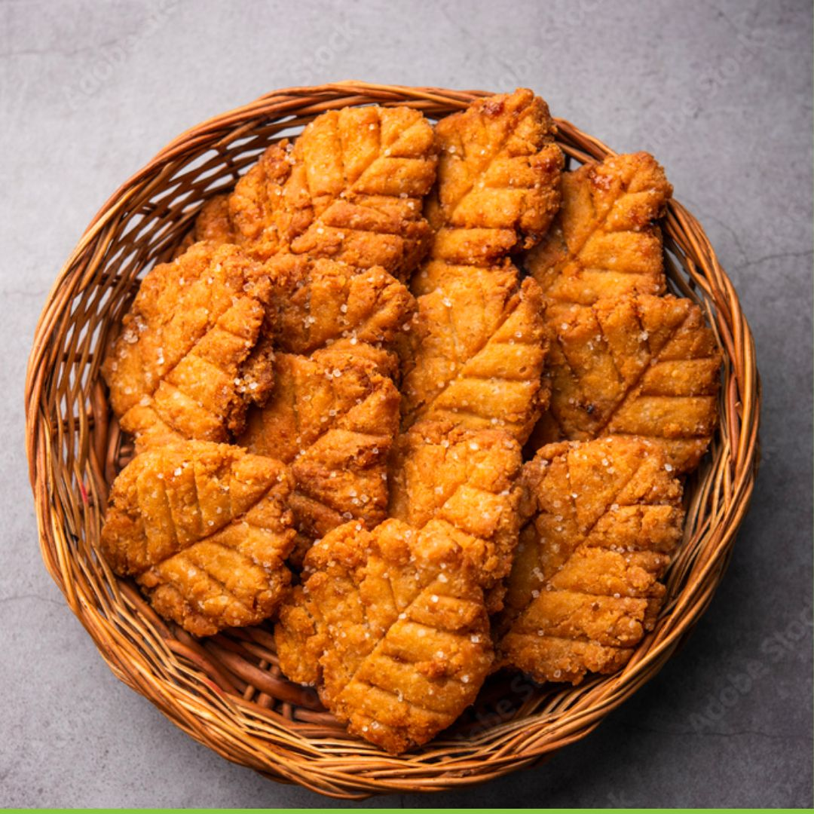
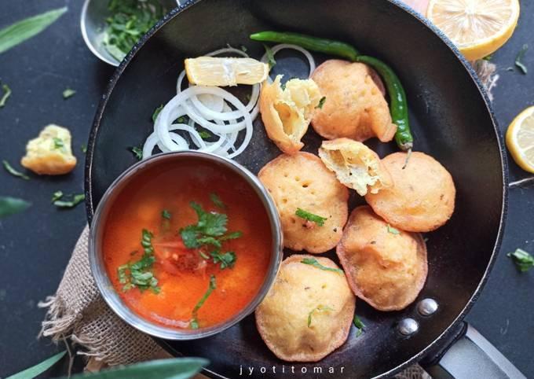

Ramen is a Japanese noodle dish. It consists of Chinese-style wheat noodles served in a broth. Common flavors are soy sauce and miso, with typical toppings including sliced pork, nori, menma, and scallions.
Read more

Thekua, also known as Khajuria, Tikari and Thokni, is an Indo-Nepalese cookie popular in Southern Nepal and the Indian states of Bihar and Uttar Pradesh. Thekua is a revered prasada, offering to god, during Chhath puja.
Read more

Dhooska or Dhuska is a popular deep-fried snack eaten all over Jharkhand, India. The dish is one of the delicacies of Jharkhandi cuisine.
Read more
Tilkut also known as tilkutam, gajak, tilpatti, is a sweet made in the Indian states of Bihar, Jharkhand.
Read more